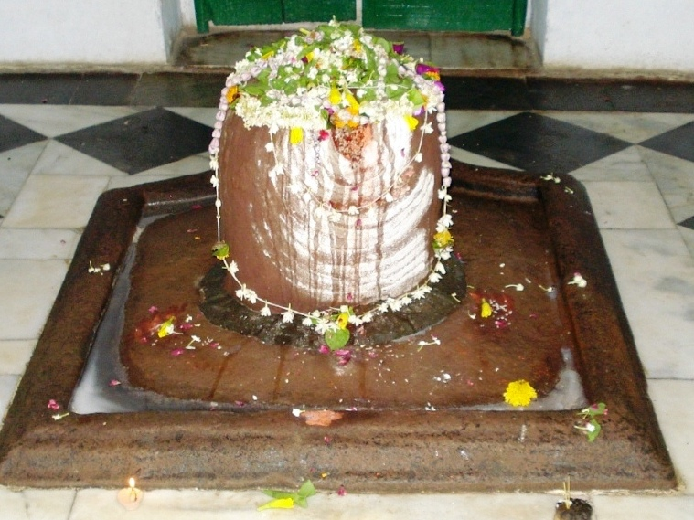

<?xml version="1.0" encoding="UTF-8"?><rss version="2.0"
	xmlns:content="http://purl.org/rss/1.0/modules/content/"
	xmlns:wfw="http://wellformedweb.org/CommentAPI/"
	xmlns:dc="http://purl.org/dc/elements/1.1/"
	xmlns:atom="http://www.w3.org/2005/Atom"
	xmlns:sy="http://purl.org/rss/1.0/modules/syndication/"
	xmlns:slash="http://purl.org/rss/1.0/modules/slash/"
	>

<channel>
	<title>Gautameshwar &#8211; Varanasi Temples</title>
	<atom:link href="index.html" rel="self" type="application/rss+xml" />
	<link>../../../../../index.html</link>
	<description>Temples of Varanasi as referred to in Kashi Khand</description>
	<lastBuildDate>Thu, 19 Jun 2025 05:16:46 +0000</lastBuildDate>
	<language>en-US</language>
	<sy:updatePeriod>hourly</sy:updatePeriod>
	<sy:updateFrequency>1</sy:updateFrequency>
	<generator>https://wordpress.org/?v=4.6.29</generator>
	<item>
		<title>GAUTAMESHWAR</title>
		<link>../../../../../shiva-temples/gautameshwar/index.html</link>
		<pubDate>Mon, 10 May 2010 02:27:28 +0000</pubDate>
		<dc:creator><![CDATA[admin]]></dc:creator>
				<category><![CDATA[Gautameshwar]]></category>
		<category><![CDATA[Other Shiva Temples (E-K)]]></category>
		<category><![CDATA[Shiva Temples]]></category>
		<category><![CDATA[gautameshwar]]></category>

		<guid isPermaLink="false">../../../../../p=373.html</guid>
		<description><![CDATA[Kashi Khand, Chapter 97 mentions various Shiv Lings all around Kashi. Among various Lings, Kashi Khand mentions one important Shiv Ling named Gautameshwar in the vicinity of Muchkundeshwar. This Shiv Ling is supposed to have been installed by Sage Gautam. (GAUTAMESHWAR) Devotees who worship this Ling will derive all happiness and will attain Moksha. LOCATION [&#8230;]]]></description>
				<content:encoded><![CDATA[<p>Kashi Khand, Chapter 97 mentions various Shiv Lings all around Kashi.</p>
<p>Among various Lings, Kashi Khand mentions one important Shiv Ling named Gautameshwar in the vicinity of Muchkundeshwar. This Shiv Ling is supposed to have been installed by Sage Gautam.</p>
<p></p>
<p style="text-align: center;"><strong>(GAUTAMESHWAR)</strong></p>
<p>Devotees who worship this Ling will derive all happiness and will attain Moksha.</p>
<p><strong><span style="text-decoration: underline;">LOCATION OF GAUTAMESHWAR</span></strong></p>
<p>Gautameshwar is located at D.37/33, Kashinaresh Shivala, Godowlia. This comes in the proximity of Marwari Hospital and is quite famous. According to old timers, there was intense dispute regarding worship of this deity and matter was referred to the then Kashi Raja, who after protracted legal cases, acquired the entire area and constructed the temple. Therefore, this temple is known as Kashi Naresh Shivala.</p>
<p>&nbsp;</p>
<p><strong>Please watch our YouTube Video about Gautameshwar at following Link</strong></p>
<p>&nbsp;</p>
<p><a href="https://www.youtube.com/watch?v=xmi58I4NvYI&amp;t=2s">https://www.youtube.com/watch?v=xmi58I4NvYI&amp;t=2s</a></p>
<p>&nbsp;</p>
<p>&nbsp;</p>
<p><strong><span style="text-decoration: underline;">TYPES OF POOJA</span></strong></p>
<p>The place of worship is open from 04.00 a.m. to 12 noon and from 04.00 p.m. to 10.00 p.m. Aarties are conducted in the morning and evening. Shayan Aarti is conducted just before closure of the temple.</p>
<p>&nbsp;</p>
]]></content:encoded>
			</item>
	</channel>
</rss>
